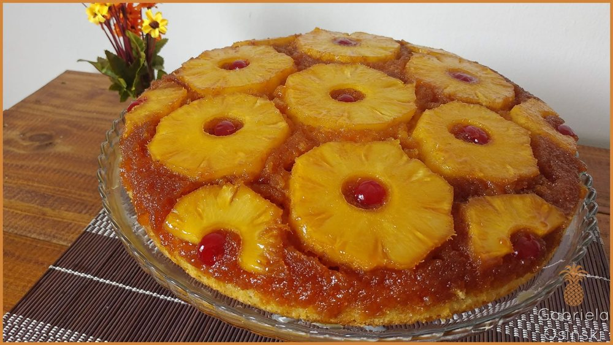

Doces · Tortas e bolos
Bolo de abacaxi

Ingredientes
- 1 colher (sopa) de manteiga
- ¼ xícara de açúcar demerara
- 5 rodelas de abacaxi em conserva escorridas
- 5 cerejas ao marasquino escorridas e cortadas ao meio
- 1 xícara de farinha de trigo
- ¾ xícara de açúcar
- 1 pitada de sal
- 1 ovo
- 2 colheres (sopa) de margarina cremosa
- ½ xícara da calda do abacaxi
- 1 colher (chá) de essência de baunilha
- 1 colher (chá) de fermento em pó
Modo de preparo
- Preaqueça o forno em temperatura média (180 °C). Numa fôrma de vidro refratário com 25 cm de diâmetro, coloque a manteiga e leve ao fogo até a manteiga derreter. Incline a fôrma para todos os lados para que a manteiga unte bem o fundo e os lados da fôrma.
- Polvilhe o açúcar demerara uniformemente sobre a fôrma untada.
- Distribua as rodelas de abacaxi de maneira a revestir a fôrma inteiramente, formando um desenho decorativo. Complete a decoração com as cerejas. Reserve.
- No copo do liquidificador, coloque a farinha de trigo, o açúcar comum, o sal, o ovo, a margarina cremosa, a calda do abacaxi e a baunilha. Bata por uns 3 minutos até obter uma mistura uniforme. Acrescente o fermento e bata mais um pouco.
- Espalhe a mistura sobre as rodelas de abacaxi e leve ao forno preaquecido para assar até que, espetando um palito perto do centro da massa, ele saia limpo.
- Retire o bolo do forno, desenforme num prato e deixe esfriar completamente. Congele.
Observação
O açúcar demerara é encontrado em casas de produtos naturais e também comercializado pelo Açúcar União, recebendo o nome de Douradinho. Congelamento: cubra o bolo com plástico e leve ao freezer até congelar; retire-o do prato e embrulhe em filme plástico, etiquete e congele. Descongelamento: em temperatura ambiente por 2 horas.